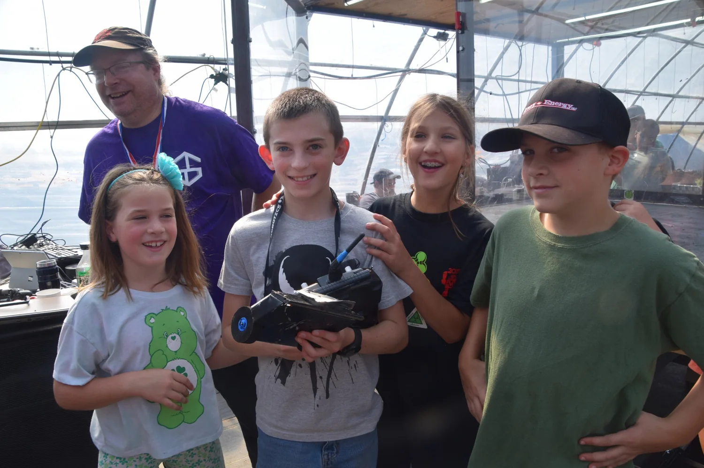
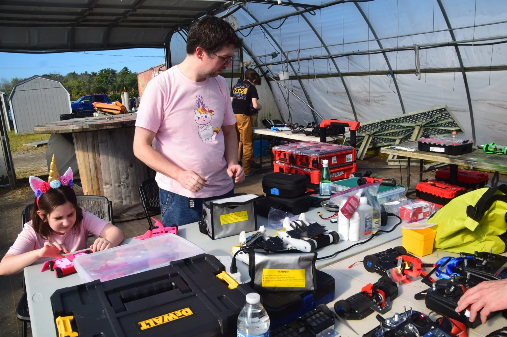
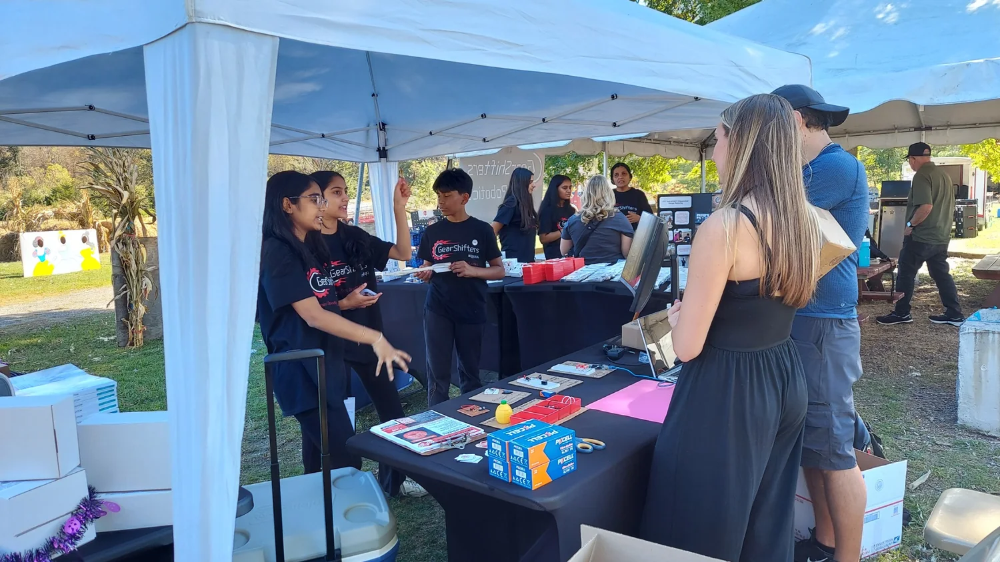
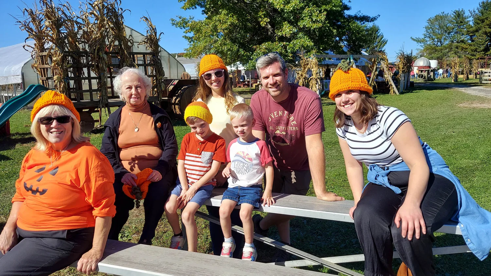
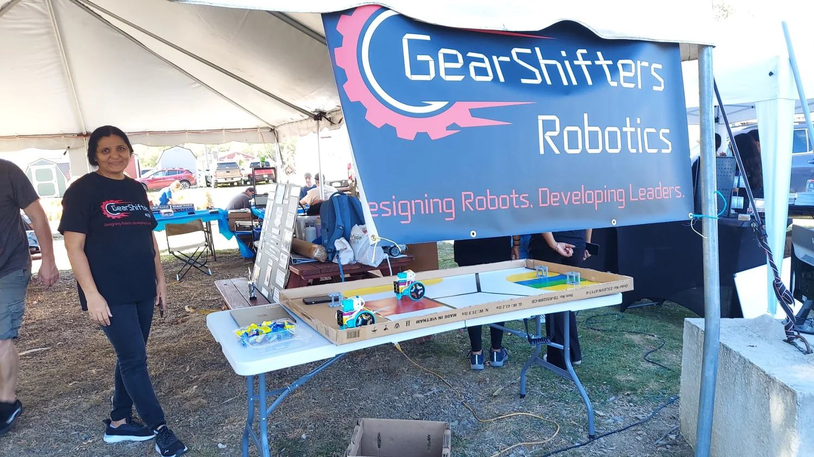

Hands-on discovery
STEM experiments, engineering challenges and STEAM workshops connect technology, art, design and real-world problem-solving.
Middlesex County Maker Fest is a FUBAR Labs-led celebration in development, connecting STEM and STEAM learning through hands-on robotics, engineering, art, design and discovery.

Connect hands-on STEM skills with STEAM creativity: try a new tool, meet a mentor and discover where one idea can lead.
A child meets a robot. A student meets a mentor. A business meets its next collaborator. The possibilities begin when we bring them together.
— Richard “Rick” Anderson, FUBAR Labs co-founder · Vision statement
STEM experiments, engineering challenges and STEAM workshops connect technology, art, design and real-world problem-solving.
Schools, makers, university partners, clubs and local industry can share knowledge and build lasting connections.
Participants leave with ideas, practical experiences, and possible paths to explore after the festival.
Beyond the event: Discover a new skill → build something → meet a mentor → continue learning with a club, class or maker community.
Photos from past Sussex County Maker Fest events show young makers, mentors and community teams creating and sharing together.



Historical event photographs, not depictions of a future Middlesex County event. Displayed as examples of the festival experience.
A snapshot of the communities and skills ecosystem that STEM and STEAM experiences can connect. These public indicators are context—not forecasts of festival turnout.
These percentages have different denominators: under 18 as a share of residents; bachelor’s degree among adults age 25+; broadband among households. Statistics and source labels are preserved from the existing live proposal.
We are exploring suitable Middlesex County locations for a hands-on festival that welcomes families, educators, makers and community organizations.
Our final location and date will depend on available space, event scale, safety, accessibility, facilities services and costs. No host institution or specific venue is being announced in this public proposal.

Past-event imagery illustrating the kinds of activities being considered, not a confirmed exhibitor.
Bring STEM educators, STEAM artists, students, makers, employers and community organizations together to share projects, skills and opportunities.
Student projects, teacher-led experiences, clubs, outreach and youth development programs.
Robotics, fabrication, art, craft, coding, demonstrations and interactive challenges.
Equipment, in-kind materials, expertise, mentorship, volunteers, financial support and introductions.
Our outreach draws on experience from previous Sussex County Maker Fest events. Past exhibitors, sponsors and workshop participants are examples of what is possible—not confirmed partners for the proposed Middlesex County event.
From power racing and robot combat to student robotics and 4-H: explore the projects that make STEM and STEAM learning exciting, creative and accessible.
Swipe to explore videos →
Five inspiration videos illustrate possible hands-on activities, not confirmed festival participants. Click a video to play; if an embedded player is unavailable, use its “Open on YouTube” link. Playback requires an internet connection.

Actual Maker Quest interface · Tap to enlarge
A playful mobile companion concept that helps visitors discover exhibits, explore challenges, collect digital badges, and enjoy interactive games.
App features may evolve; festival schedules and challenges are not yet finalized.
The proposal is advancing through venue exploration, program design, outreach and sponsor development.
Explore and evaluate venue options, dates, spaces, safety, accessibility, services and costs.
Develop a realistic schedule; recruit workshops, exhibitors, student organizations, makers and community partners.
Confirm sponsors, logistics, event communications, volunteers and the visitor experience.
Produced by FUBAR Labs. Fair Use Building and Research (FUBAR) Labs is a volunteer-powered New Jersey nonprofit makerspace founded in New Brunswick in 2009 and now based in North Brunswick. It connects makers, artists, engineers and curious newcomers through shared tools, experimentation, technical skills and STEAM learning. Read the mission ↗
Rick is a FUBAR Labs co-founder, Rutgers University virtual-worlds innovator and longtime advocate for hands-on technology education. His work has connected students and communities to electronics, Arduino, programming, 3D printing and creative experimentation. A co-author of Pro Arduino, Rick has helped make complex technologies approachable through learning by doing.
Rick’s Rutgers profile ↗Ariel designed and developed this proposal website. A Rutgers University multimedia designer, filmmaker and former advertising art director, he brings more than two decades of creative production experience to storytelling, instructional media and technology. He has taught photography and filmmaking to students and young makers.
As a lifelong learner and father, he wants his daughter—and every young person—to have opportunities to discover what excites them, meet mentors and feel empowered to create.
This proposal reflects a wider community of makers, educators, partners and volunteers. These profiles explain the people and values behind the website and its vision; participation by prospective organizations remains subject to confirmation.
Whether you're an educator, inventor, exhibitor, business or community organizer, there's room to help make a Middlesex County Maker Fest happen.
Discuss a partnership ↗